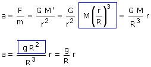
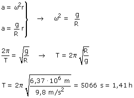

A partir de la posición de equilibrio, el centro de la Tierra, desplazamos el objeto una distancia r y calculamos la aceleración que adquiere
|
|
 |
|
|
En el centro de la Tierra el objeto no sufre fuerza |

Resulta que la aceleración del cuerpo es proporcional a la elongación r y contraria a esta (Llevando el objeto hacia arriba, la aceleración va hacia abajo)
Comparamos la aceleración calculada (Dinámica) con el módulo de la aceleración de un cuerpo que oscila armonicamente (Cinemática)

Si dejáramos caer una piedra en la boca de un pozo que atravesara diametralmente la Tierra, dicha piedra volvería al punto de partida al cabo de 1.41 h